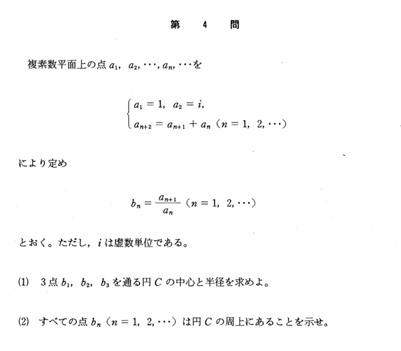

2001年 第4問
複素数平面

分析
前2問と同様、愚直な解法で示すことが一番の近道である問題である。$b_n\rightarrow b_{n+1}\ $を変換として考える解法や分数漸化式を応用させる解法、同一円上を示す方法として直径に対する円周角を考える解法、内接四角形の性質から示す解法、実験的にフィボナッチ数列となることを見つけて仮定して示す解法などが考えられるが、やはり最初に数列の自然数nに対する全称問題として思いつく解法、「数学的帰納法」が最短であることがわかった。これはやはり、様々な方法から最も適する解法を選択する、「いかに体系化した解法選択ができるか」という点が問われている。
また、細かいが、$b_n\ $が分数によって定義されているので、分母が0とならないことを示しておく方が厳密であり、「数学的な厳密さ」も問われている。
誘導
(1)で求めた円Cを(2)で使うことから、(1)と(2)は連続している独立した問題である。